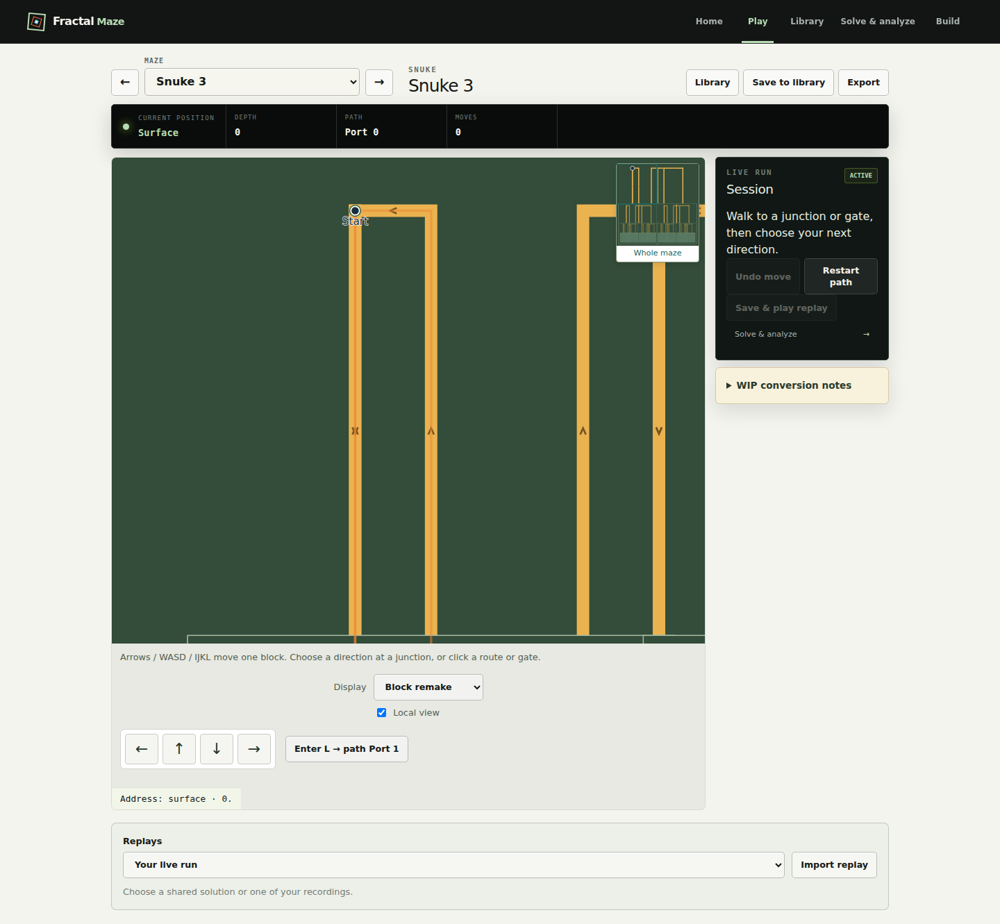
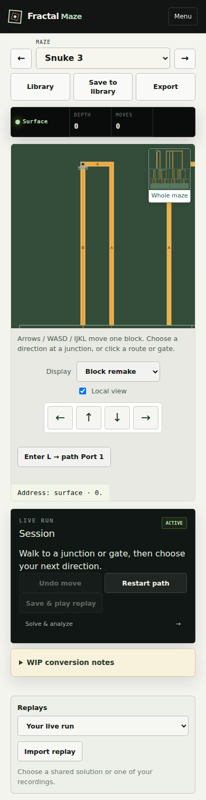

Orthogonal block layouts
Orthogonal layouts with the shared physical session. Full maze coverage remains in progress.
Snuke 3 — 1440px
Skeptic Play 1 — 1440px Wolfram 1 — 1440px
Wolfram 1 — 1440px Inner Frame — 1440px
Inner Frame — 1440px Snuke 3 — 390px
Snuke 3 — 390px
Skeptic Play 1 — 390px Wolfram 1 — 390px
Wolfram 1 — 390px Inner Frame — 390px
Inner Frame — 390px